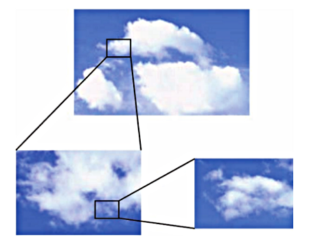
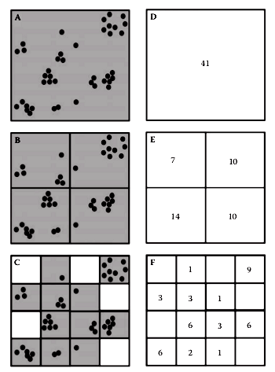
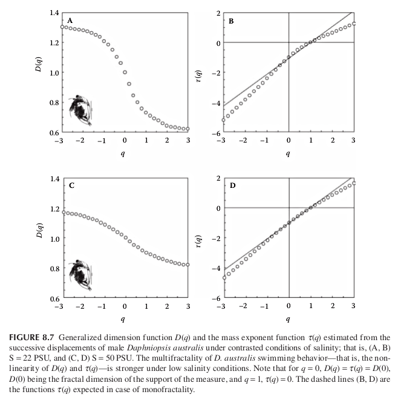

Multifractal theory - Day 3
Multifractals
-
Many natural systems cannot be characterized by a single number such as the fractal dimension. Instead an infinite spectrum of dimensions must be introduced.

Multifractal definition
-
Consider a given object $\Omega$, its multifractal nature is practically determined by covering the system with a set of boxes ${B_i(r)}$ with $(i=1,…, N(r))$ of side lenght $r$
-
These boxes are nonoverlaping and such that
$$\Omega = \bigcup_{i=1}^{N(r)} B_i(r)$$
This is the box-counting method but now a measure $\mu(B_n)$ for each box is computed. This measure corresponds to the total population or biomass contained in $B_n$, in general will scale as:
$$\mu(B_n) \propto r^\alpha$$
Box counting

The generalized dimensions
-
The fractal dimension $D$ already defined is actually one of an infinite spectrum of so-called correlation dimension of order $q$ or also called Renyi entropies.
$$D_q = \lim_{r \to 0} \frac{1}{q-1}\frac{log \left[ \sum_{i=1}^{N(r)}p_i^q \right]}{\log r}$$
where $p_i=\mu(B_i)$ and a normalization is assumed:
$$\sum_{i=1}^{N(r)}p_i=1$$
-
For $q=0$ we have the familiar definition of fractal dimension. To see this we replace $q=0$
$$D_0 = -\lim_{r \to 0}\frac{N(r)}{\log r}$$
Generalized dimensions 1
-
It can be shown that the inequality $D_q' \leq D_q$ holds for $q' \geq q$
-
The sum
$$M_q(r) = \sum_{i=1}^{N(r)}[\mu(B_i(r))]^q = \sum_{i=1}^{N(r)}p_i^q$$
is the so-called moment or partition function of order $q$.
-
Varying q allows to measure the non-homogeneity of the pattern. The moments with larger $q$ will be dominated by the densest boxes. For $q<0$ will come from small $p_i$’s.
-
Alternatively we can think that for $q>0$, $D_q$ reflects the scaling of the large fluctuations and strong singularities. In contrast, for $q<0$, $D_q$ reflects the scaling of the small fluctuations and weak singularities.
Exercise
-
Calculate the partition function for the center and lower images of the figure:
Two important dimensions
-
Two particular cases are $q=1$ and $q=2$. The dimension for $q=1$ is the Shannon entropy or also called by ecologist the Shannon’s index of diversity.
$$D_1 = -\lim_{r \to 0}\sum_{i=1}^{N(r)} p_i \log p_i$$
and the second is the so-called correlation dimension:
$$D_2 = -\lim_{r \to 0} \frac{\log \left[ \sum_{i=1}^{N(r)} p_i^2 \right]}{\log r} $$
the numerator is the log of the Simpson index.
Application
-
Salinity stress in the cladoceran Daphniopsis Australis. Behavioral experiments were conducted on individual males, and their successive displacements analyzed using the generalized dimension function $D_q$ and the mass exponent function $\tau_q$

both functions indicate that the successive displacements of male D. australis have weaker multifractal properties. This is consistent with and generalizes previous results showing a decrease in the complexity of behavioral sequences under stressful conditions for a range of organisms.
-
A shift between multifractal and fractal properties or a change in multifractal properties, in animal behavior is then suggested as a potential diagnostic tool to assess animal stress levels and health.
Mass exponent and Hurst exponent
-
The same information contained in the generalized dimensions can be expressed using mass exponents:
$$M_q(r) \propto r^{-\tau_q}$$
This is the scaling of the partition function. For monofractals $\tau_q$ is linear and related to the Hurst exponent:
$$\tau_q = q H - 1$$
For multifractals we have
$$\tau_q = (q -1) D_q$$
Note that for $q=0$, $D_q = \tau_q$ and for $q=1$, $\tau_q=0$
Paper
- Kellner JR, Asner GP (2009) Convergent structural responses of tropical forests to diverse disturbance regimes. Ecology Letters 12: 887–897. doi:10.1111/j.1461-0248.2009.01345.x.
Leonardo A. Saravia
Professor/Researcher
Docente/Investigador de la UNGS, Investigador Independiente CADIC - CONICET, Doctor en Biología de la UBA. Complex systems. Networks. Global Forest Fragmentation. Open science. R C++ & Python.